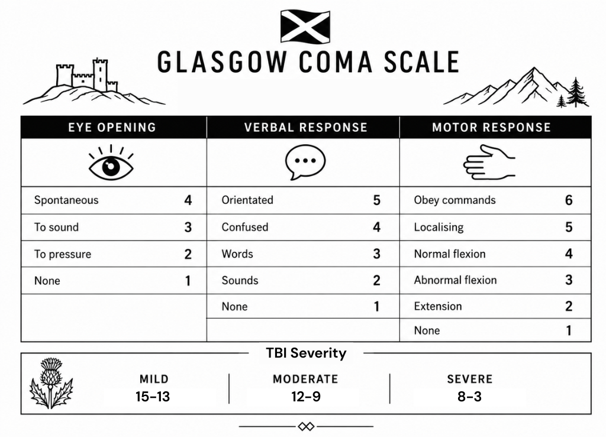
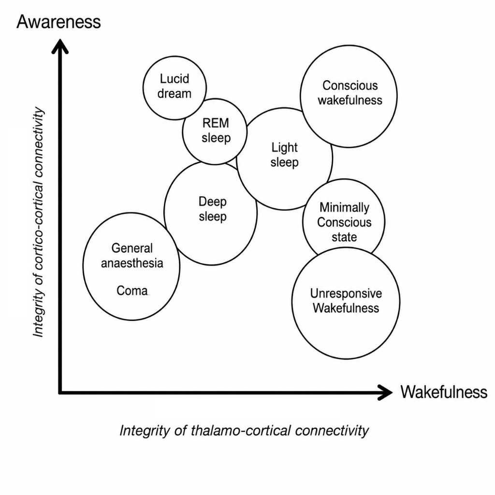

1 Mental Status
Arousal state:
Alert, Confused, Somnolent/Lethargic (rouses to tactile stim), Stuporous (rouses to painful stim), Coma (no arousal to pain)
Glasgow Coma Scale

2 Attention
Spell WORLD backwards, months backwards, serial 7’s, or count from 20 to 1.
3 Language
Evaluate fluency, repetition, naming, reading, writing, and comprehension.
Test: 1-step commands (midline vs. appendicular), 2-step commands, and 2-step reversed grammar commands (e.g., “touch your nose after pointing to the ceiling”).
3.1 Aphasia Components
- Motor / Non-fluent / Expressive / Broca’s aphasia: <50 words/min, effortful, agrammatic (mostly nouns), frustration; reading aloud and writing impaired.
- Aphemia — writing preserved
- Alexia — isolated inability to read
- Sensory / Receptive / Wernicke’s aphasia: Cannot comprehend speech, “word salad”, no awareness of deficit.
- Conduction aphasia: Inability to repeat.
- Transcortical motor aphasia: Impaired fluency but preserved repetition.
- Transcortical sensory aphasia: Impaired comprehension but preserved repetition.
- Transcortical mixed aphasia: Impaired fluency and comprehension but preserved repetition.
- Anomic aphasia: Preserved motor/sensory function with difficulty naming.
4 Fund of Knowledge
Current events and quality of medical history.
5 Memory
Recall 3–5 objects at 1 minute, digit span (average 7), story retelling, distant memory.
- Working / Immediate / Sensory memory (<60 s): Able to store 7 ± 2 digits when asked in <1 min.
- Explicit / Declarative memory (Episodic / Spatial — involves Papez circuit): Converts working memory into long-term memories.
- Implicit / Nondeclarative memory (Procedural, emotional conditioning): Involves amygdala, striatum, cerebellum; facilitated in Stage 2 sleep.
6 Visuospatial
Organization of space (clock drawing, complex figure copy).
7 Praxis
“Show me how you use a hammer” + mimic action afterward.
7.1 Types of Apraxia
- Ideomotor — unable to complete action on verbal command (e.g., use a hammer).
- Ideational — incorrect sequence of actions for a verbal task (e.g., how to mail a letter).
- Conduction — able to pantomime but cannot complete on verbal command.
- Dissociation — unable to pantomime but can complete on verbal command.
- Limb-kinetic — unable to perform fine-motor predominant actions (e.g., buttoning).
Task-specific apraxias: - Eyelid — unable to open eyes to command - Dressing — unable to dress self - Gait — unable to walk (freezing, wide-based); can perform complex movements without ataxia when supine - Oculomotor / ocular — cannot shift gaze with saccades (shifts head instead); intact slow pursuit
8 Calculation
“Show me 3 fingers”, “What is 40 + 50?”
- Acalculia — inability to perform.
9 Abstraction
“How are a bicycle and a train related?”
10 Executive Function
Organization of knowledge, inhibition, sequencing, perseveration.
- Verbal fluency: Name animals in 1 minute (>20 is normal).
- Oral trails: A1, B2, 3C…
- Luria 3-step: Fist–edge–palm (repeat 3 times).
- Go/No-Go: Raise hand every time I say a letter except when I say “D”.
11 Classifying disorders of consciousness

Unresponsive Wakefulness Syndrome(Vegetative State): Patients are awake (eye-opening, sleep-wake cycles present) but show no signs of awareness of themselves or their environment.
Locked-in Syndrome:
An awake and fully aware state, but the patient cannot move or speak (except sometimes eye blinks) due to tetraplegia, often mistaken for coma.